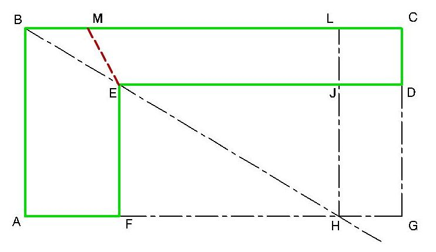

- Enunciado
- Tengo una parcela de tierra en forma de L. Las seis esquinas son ángulos rectos perfectos, pero las longitudes son diferentes y, en ningún caso tengo forma de medirlos.
- Todo lo que tengo son algunos palos que puedo clavar al suelo, y una cuerda común.
- Deseo determinar la posición de una nueva cerca. La cerca debe ser una sola línea recta, y debe dividir el área de mi tierra exactamente en dos.
- ¿Cómo puedo lograr esto?

- Todo lo que tengo son algunos palos que puedo clavar al suelo, y una cuerda común.
- Solución
- 
- Ato una soga a la estaca en el vértice B
- Ato el otro extremo de la soga en el punto H que está sobre la prolongación imaginaria del lado A-F, de modo tal que pase por sobre el vértice E.
- Marco un punto L sobre el lado B-C, tal que H-L sea perpendicular a B-C
- El rectángulo imaginario A-B-L-H está dividido en dos por la soga diagonal B-H. De la misma forma el rectángulo F-E-J-H también está dividido en dos. Y por lo tanto los terrenos A-B-E-F y B-L-J-E tienen la misma superficie.
- El sector delimitado por J-L-C-D no está incluido en ninguno de los terrenos iguales mencionados anteriormente por lo que se asignará la mitad a cada uno.
- Tomo la medida del lado L-C con una soga y la traslado a partir del vértice B; con lo que tengo el punto M
- La dividión en dos pasará por M-E ya que el triángulo B-M-E tiene mitad de superficie a repartir.
- Ato una soga a la estaca en el vértice B